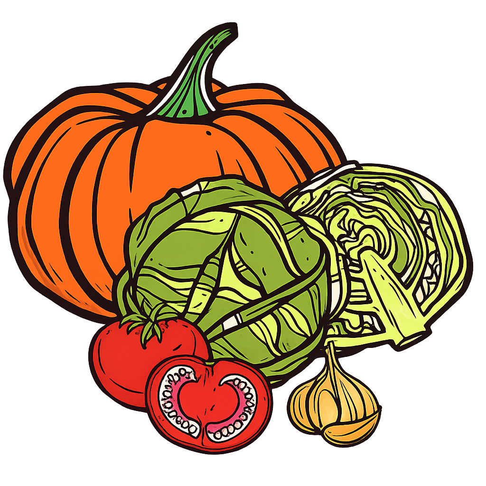

DO NOSSO CAMPUS, PARA A SUA VIDA
Descubra o Poder de um
Campus Sustentável
O projeto transforma o IFMG Campus Formiga num ecossistema vivo, integrando horta orgânica, compostagem e jardim melífero. Diariamente, convertemos cascas de cerca de 200 frutas em adubo natural. Promovemos a educação ambiental e protegemos os polinizadores com um espaço livre de agrotóxicos.
